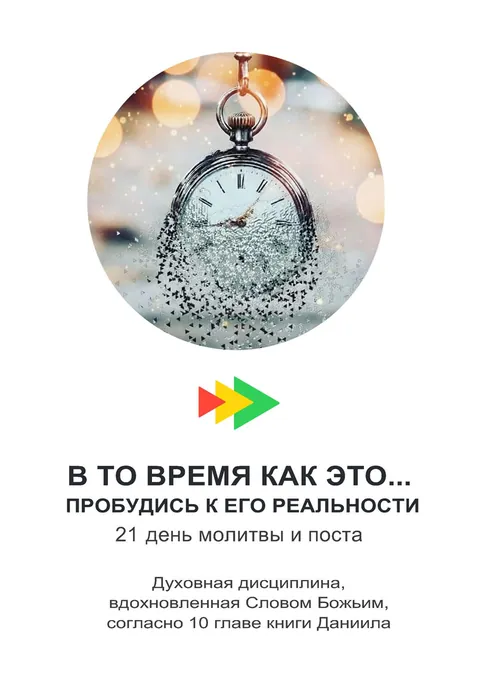

Молитвенный гид
В то время как это... пробудись к Его реальности
Эти три недели напоминают нам, что пробуждение Бога начинается лично, распространяется по нашим сообществам и распространяется по всему обществу, высвобождая Его реальность для такого времени, как это.
Скачать